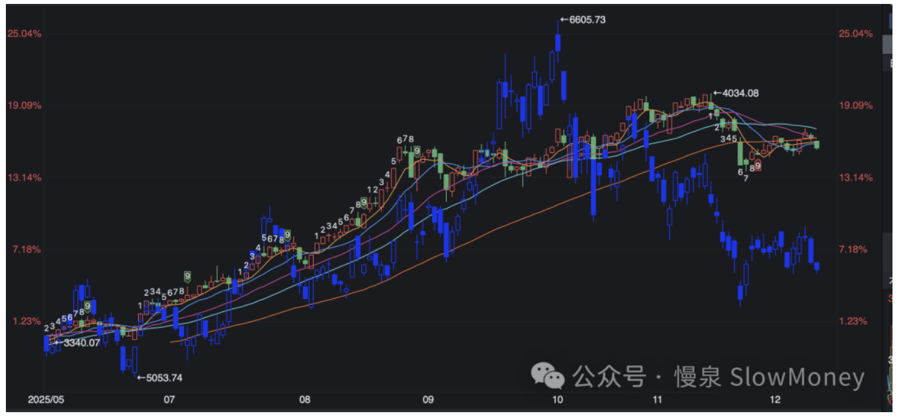

宏观讨论20251220-港股怎么了
2025-12-20 · 港股怎么了？ · 宏观讨论（补档）
最近港股特别是恒生科技的走势跟 A 股走势分化增加——A 股震荡盘整的情况下，恒生科技下跌超过 10%，其中小米、汽车股、京东、联想、舜宇跌幅较大。
这种下跌不仅跟 A 股走势相左，跟亚太地区相比也比较弱——亚太区域除了澳大利亚，东南亚、韩国大部分指数均在稳步上行。

所以港股怎么了？
背后的原因
市场上关于最近的港股走势有很多的分析——美联储可能的鹰派降息、日本加息的流动性、保险资金投资因子调节没有港股、甚至基金考核要求。大部分自说自话。港股市场调整背后，资金的考虑是什么？
产业逻辑主导的下跌。跌幅较大的主要是恒生科技指数——恒生指数整体跟踪外盘变动相对小。恒生科技中新能源汽车占比接近 20%（蔚小理 10%、小米 8%、2025 年 5 月份调入的比亚迪），新能源产业在三、四季度净利较大幅度地下跌，主要是对行业竞争、明年退坡的担忧增加。
互联网内卷竞争的影响。二季度即时零售的投入 1000 亿在业绩上影响较大——亏损是否会扩大的担忧影响了股价的表现。
港股 IPO 扩大对资金有所分流。
有机会么？
既然是微观因素带来的分化，那么就可以减少对市场 beta 的关注度，聚焦在产业趋势上。而且随着 A/H 市场的分化和更多的公司港股上市，可以多在 H 股找相关的落地方案。具体看：
- 红利资产港股占优。 整体的分红率和股息率仍然有优势——随着这一轮的调整布局潜在红利方向（煤炭、消费）。
- 消费更低。 从 2021 年以来消费的持续调整，很多消费连锁、产品和渠道被持续杀跌——今年三家即时零售大战之后，与此相关的互联网和消费品公司有机会。
- 新产业趋势。 机器人和新产业方向上市公司不断增加，在吸引内外部资金上有优势。
既然是微观因素带来的分化，就减少对 beta 的关注、聚焦产业趋势——多在 H 股找落地方案。
原文 / 观点：Matt · johsnon0827@gmail.com